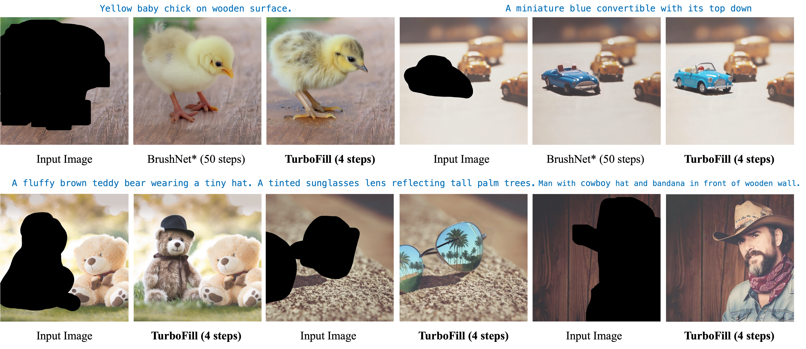

TurboFill: Adapting Few-step Text-to-image Model
for Fast Image Inpainting

This paper introduces TurboFill, a fast image inpainting model that enhances a few-step text-to-image diffusion model with an inpainting adapter for high-quality and efficient inpainting. While standard diffusion models generate high-quality results, they incur high computational costs. We overcome this by training an inpainting adapter on a few-step distilled text-to-image model, DMD2, using a novel 3-step adversarial training scheme to ensure realistic, structurally consistent, and visually harmonious inpainted regions. To evaluate TurboFill, we propose two benchmarks: DilationBench, which tests performance across mask sizes, and HumanBench, based on human feedback for complex prompts. Experiments show that TurboFill outperforms both multi-step BrushNet and few-step inpainting methods, setting a new benchmark for high-performance inpainting tasks.
Despite the advantage of BrushNet-like models, they still depend on many iterative sampling steps, leading to substantial inference cost in practice. Interestingly, we found that an inpainting adapter trained on a pretrained text-to-image diffusion model can be seamlessly integrated into its corresponding few-step student model without further training, while yielding reasonable quality results (②). This can be attributed to the semantic alignment between the teacher and student models. However, this naive migration approach exhibits quality issues such as color shifts, over-saturation, and loss of details. If we naively train an inpainting adapter and few-step model solely with diffusion loss, the results are blurry and low-quality (③). To address these shortcomings and enhance inpainting performance, we propose TurboFill to train an inpainting adapter directly on top of a pretrained few-step distilled text-to-image model (e.g., DMD2).
There are three components in TurboFill: the fast generator, the slow generator and the diffusion discriminator. All these three components aim to enhance the adapter’s capability of inpainting masked images. Specifically, the slow generator helps the adapter to denoise the noisy latents towards the most probable direction of realistic image generation. The fast generator enables the adapter to generate a clean image for critique during training. The diffusion discriminator guides the adapter to generate images with better textures, details and content harmonization. Based on these three components, TurboFill follows a 3-step adversarial training scheme. The training alternates between 3 steps throughout the training process.


Comparison of few-step image inpainting methods on DilationBench. Compared to other few-step image inpainting models, TurboFill produces results that align more effectively with the prompt. Furthermore, TurboFill generates more realistic details and textures while achieving effective scene harmonization.


Comparison of previous inpainting methods and BrushNet on HumanBench. Compared to other methods, TurboFill generates more realistic details and textures in just 4 steps, while achieving good scene harmonization.
@article{xie2025turbofill,
title={TurboFill: Adapting Few-step Text-to-image Model for Fast Image Inpainting},
author={Xie, Liangbin and Pakhomov, Daniil and Wang, Zhonghao and Wu, Zongze and Chen, Ziyan
and Zhou, Yuqian and Zheng, Haitian and Zhang, Zhifei and Lin, Zhe and Zhou, Jiantao and Dong, Chao},
booktitle={IEEE Conference on Computer Vision and Pattern Recognition (CVPR)},
year={2025}
}